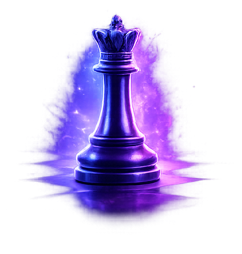

La pièce la plus puissante du plateau.

La reine est la pièce la plus polyvalente et la plus dominante. Elle combine les mouvements de la tour et du fou.
Elle peut se déplacer horizontalement, verticalement et en diagonale, sur autant de cases que souhaité, tant qu’aucune pièce ne bloque son chemin.
Bien qu’extrêmement puissante, la reine ne doit pas être exposée trop tôt. Elle est particulièrement redoutable en milieu et fin de partie.
Utilisée en coordination avec les tours, elle crée des attaques décisives sur les colonnes ouvertes.